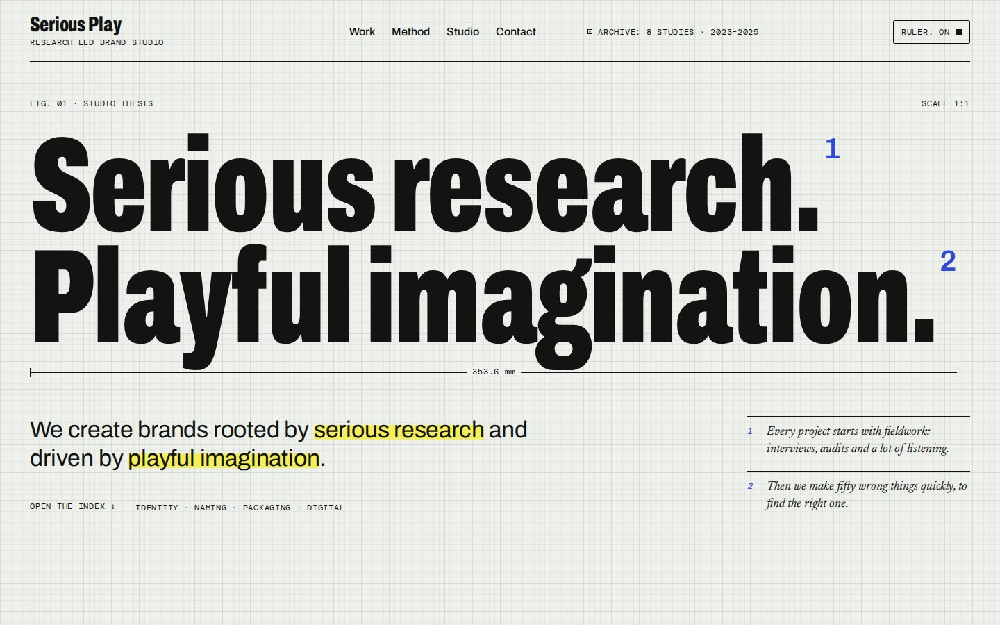
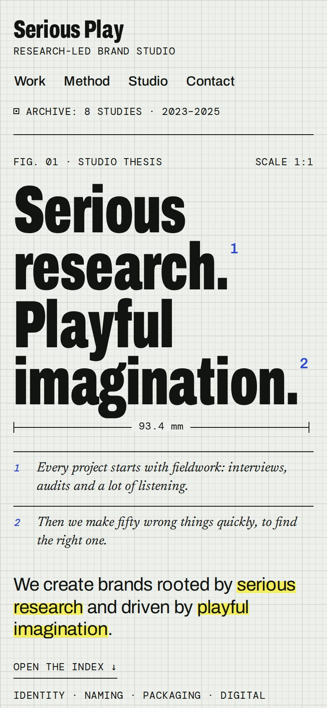
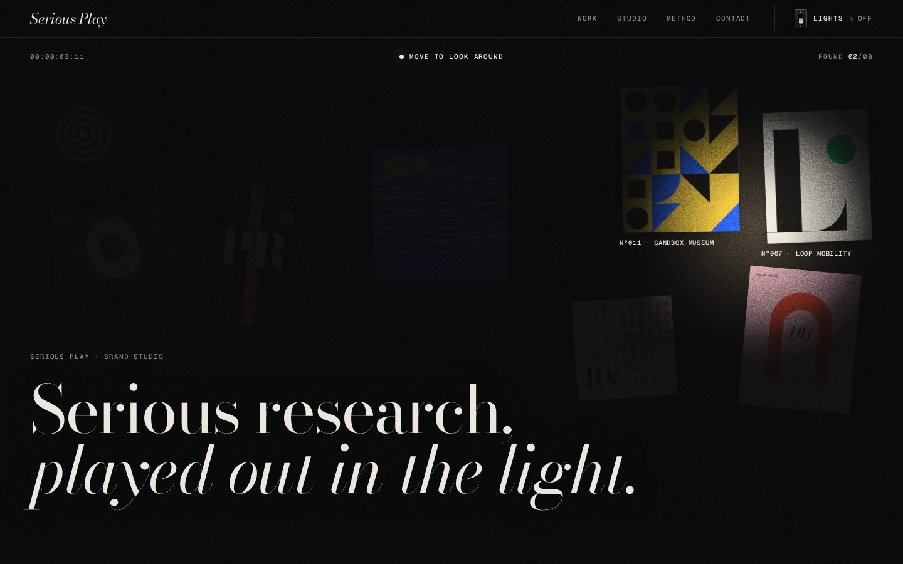
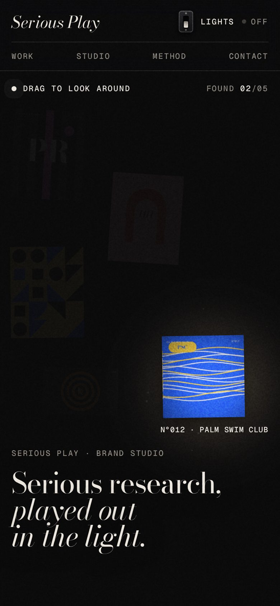
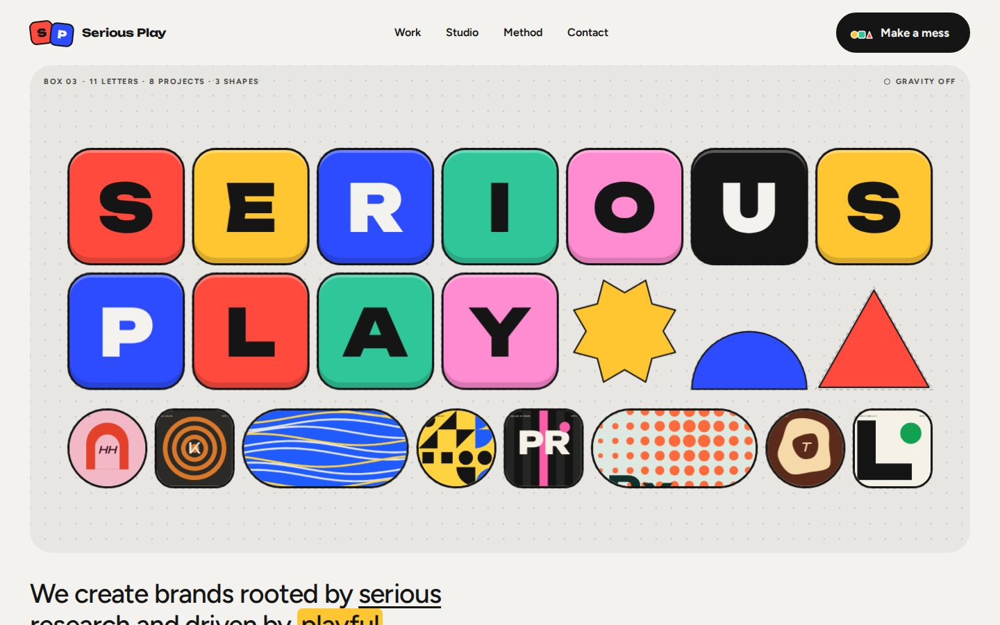
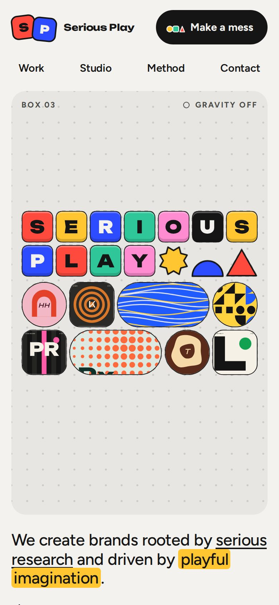

Future clients
Can they do this for my brand? Show me work like mine, and show me how you think.
- Work filtered by sector and service
- Case studies that lead with the finding
- Clear services and one obvious way to get in touch
The rulebook for your new website. Seven rules, three ways to play, and one decision to make together.
Check the contents before play
Rule1
Build a website that proves the studio's method within ten seconds. The portfolio is the proof.
Serious Play already has its thesis: “We create brands rooted by serious research and driven by playful imagination.” The new site should behave like that sentence.
Rule2
Three kinds of visitor, each arriving with one question. The site answers all three without making anyone dig.
Can they do this for my brand? Show me work like mine, and show me how you think.
Is this a place where I would do my best work?
What's the story here, and who made it?
Rule3
Your references and our mood on one board. Everything in the directions traces back to something here.


An independent art and design studio for fashion, luxury, music and art. We take its posture: a studio that behaves like an art practice, with luxury-level pacing and craft.
studiograylab.com ↗Each tile opens the original post. Notes on what we take from each one are added after our reference review together.
Serious research, made visible.
Play is a way of looking.
Directed by research. Played by instinct.
02Finding: the gift matters more than the sweet.
Filed under: F&BWords we avoid:QuirkyZanyCorporateMinimal for its own sake
Rule4
Six art direction principles. They hold in every direction, so whichever one you choose, the brand stays the same.
Every page has a serious layer (the grid, the facts, the research) and a play layer (one interaction, one surprise).
Two families, big sizes, few weights. Headlines carry the personality so the layout can stay calm.
The interface stays neutral so the portfolio can be as loud as each client needs.
Twelve columns and an 8px rhythm. A play moment may break the grid, once per screen.
Things ease, settle and respond to the hand. Every effect has a calm version for people who turn motion off.
Plain words, short sentences, specific claims. Wit is welcome once the point is clear.
Rule5
Three directions, each a different setting on the dial. All three are live prototypes. Open them, click everything, then tell us where the dial should sit.


The studio as a research lab. The work is catalogued like an archive of studies, and footnotes and margin notes show the thinking behind each one.


A dark, cinematic studio. Your cursor is a flashlight, and the work waits in the dark until you find it. The work is the only colour on the page.


The studio as a toybox. One button throws the homepage into physics. Another tidies every piece back into a perfect grid.
| Criterion | 01 Field Notes | 02 Lights Off | 03 Playground |
|---|---|---|---|
| First impression | Considered, expert, calm | Cinematic, premium, intriguing | Loud, joyful, memorable |
| Browsing the work | Index, filters, specimens | Lit list, one project at a time | Toybox grid and previews |
| Case-study depth | Dossiers with findings | Film-style credits | Short previews |
| On a phone | Cards replace the table, notes go inline | The light drifts on its own, drag to steer | Fewer, larger pieces, simple drag |
| Build effort | Medium | Medium to high | High |
| Content it needs | Research artefacts and good writing | Striking imagery and video | Bold covers and short copy |
| Main risk | Too quiet to stand out | Style over clarity if overdone | Gimmick fatigue |
Our recommendation
Prefer one pure direction? Each prototype stands on its own, and the plan works for any of them.
Rule6
Ten weeks from kickoff to launch, with four moments where you sign off before we move on. Dates shift with content readiness.
Rule7
Three decisions and eight questions. Answer them and design starts the following week.
One of the three, or the recommended mix. Set the dial at the top of this page to show us where you lean.
8–12 projects that best show the range you want to be hired for.
The ten-week timeline, the sitemap and who signs off each gate.
End of rules
Your move
Set the dial, open the prototypes, and leave your notes. We'll bring the refined direction to our next meeting.